5.5. Advanced topics
5.5.5. How do you optimize a process?
5.5.5.2. Multiple response case
5.5.5.2.2. |
Multiple response: The desirability approach |
Desirability approach steps
An example using the desirability approach
 that provide the "most desirable'' response values.
that provide the "most desirable'' response values.
For each response
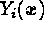
, a desirability function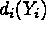
assigns numbers between 0 and 1 to the possible values of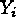
, with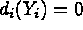
representing a completely undesirable value of and
and 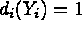
representing a completely desirable or ideal response value. The individual desirabilities are then combined using the geometric mean, which gives the overall desirability D: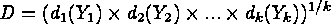
where k denotes the number of responses. Notice that if any response i is completely undesirable
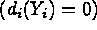
then the overall desirability is zero. In practice, fitted response models are used in the method.Depending on whether a particular response  is to be maximized, minimized, or assigned to a target value, different
desirability functions
is to be maximized, minimized, or assigned to a target value, different
desirability functions  can be used. A useful class of desirability functions was proposed by Derringer
and Suich (1980). Let
can be used. A useful class of desirability functions was proposed by Derringer
and Suich (1980). Let
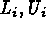
and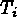
be the lower, upper, and target values desired for response i, where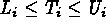
. If a response is of the "target is best'' kind, then its individual desirability function is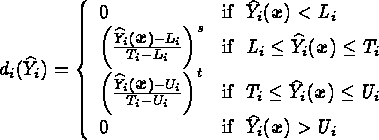
where the exponents s and t determine how strictly the
target value is desired. For s = t =1, the desirability function
increases linearly towards  ,
for s<1, t<1, the function is convex, and for s>1, t>1,
the function is concave (see the example below for
an illustration).
,
for s<1, t<1, the function is convex, and for s>1, t>1,
the function is concave (see the example below for
an illustration).
If a response is to be maximized instead, the individual desirability is instead defined as
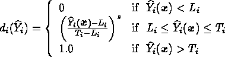
where in this case  is interpreted as a large enough value for the response. Finally, if we
want to minimize a response, we could use
is interpreted as a large enough value for the response. Finally, if we
want to minimize a response, we could use
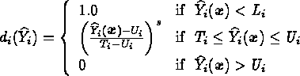
where  represents
a small enough value for the response.
represents
a small enough value for the response.
The desirability approach consists of the following steps:
- Conduct experiments and fit response models for all k responses;
- Define individual desirability functions for each response;
- Maximize the overall desirability D with respect to the controllable factors.
Derringer and Suich (1980) present the following multiple response experiment arising in the development of a tire tread compound. The controllable factors are :
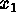
, hydrated silica level,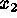
, silane coupling agent level, and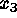
, sulfur level. The four responses to be optimized and their desired ranges are: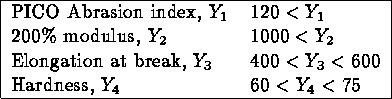
The first two responses are to be maximized, and the value s=1 was chosen for their desirability functions. The last two responses are "target is best'' with
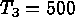
and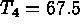
. The values s = t =1 were chosen in both cases. The following experiments were conducted according to a central composite design.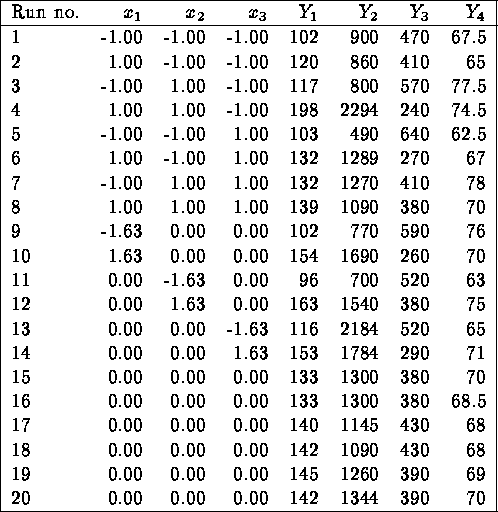
Using ordinary least squares and standard diagnostics, the fitted responses were:
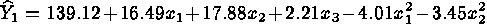
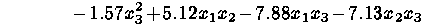
(adj.
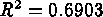
);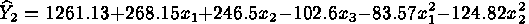
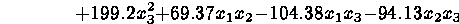
(adj.
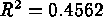
);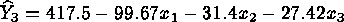
(adj
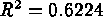
);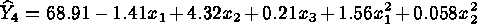
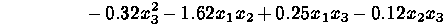
(adj.
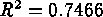
).Note that no interactions were significant for response 3, and that the fit for response 2 is quite poor.
Optimization of D with respect to  was carried out using the Design Expert software. Figure 5.7 shows the
individual desirability functions
was carried out using the Design Expert software. Figure 5.7 shows the
individual desirability functions
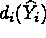
for each of the four responses. The functions are linear since the values of s and t were selected equal to one. A dot indicates the best solution found by the Design Expert solver.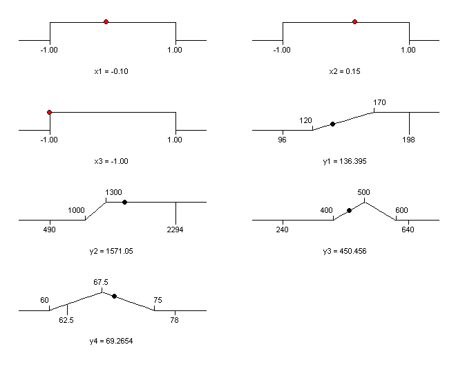
FIGURE 5.7 Desirability Functions and Optimal Solution for Example Problem
The best solution is
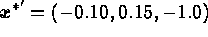
and results inand
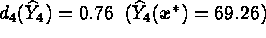
. The overall desirability for this solution is 0.596. All responses are predicted to be within the desired limits.Figure 5.8 shows a 3D plot of the overall desirability function  for the
for the
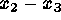
plane when is fixed at -0.10. The function
is fixed at -0.10. The function 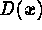
is quite "flat'' in the vicinity of the optimal solution, indicating that small variations around are not predicted to change the overall desirability drastically. However,
it should be emphasized the importance of performing confirmatory runs
at the estimated optimal operating conditions. This is particularly true
in this example given the poor fit of the response models (e.g. ).
are not predicted to change the overall desirability drastically. However,
it should be emphasized the importance of performing confirmatory runs
at the estimated optimal operating conditions. This is particularly true
in this example given the poor fit of the response models (e.g. ).
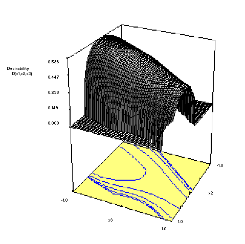